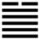

Trạch Thiên Quải (夬 guài)
Tăng lên đến cùng cực thì tới lúc tràn đầy, nứt vỡ nên sau quẻ Ích tới quẻ Quải. Quải có nghĩa là nứt vỡ, lại có nghĩa là quyết liệt.
Thoán từ:
夬: 揚于王庭, 孚號. 有厲, 告自邑．不利即戎, 利有攸往．
Quải: Dương vu vương đình, phu hiệu. Hữu lệ, cáo tự ấp, bất lợi tức nhung, lợi hữu du vãng.
Dịch: Quyết liệt: phải tuyên cáo tội ác của nó ở sân vua, lấy lòng chí thành mà phát hiệu lệnh. Có điều như sợ đấy, phải tự răn phe mình đã, đừng chuyên dùng võ lực, được như vậy thì sự nghiệp của mình càng tiến tới, có lợi.
Giảng: Chằm (Đoài) ở trên, trời (Càn) ở dưới, là nước chằm dân lên ngập trời, tất nhiên các đê ngăn nước phải nứt vỡ khắp nơi.
Lại thêm 5 hào dương tiến lên, quyết tâm trừ một hào âm ở trên cùng. Vì hai lẽ đó mà quẻ này đặt tên là Quải.
Quẻ này thuộc về tháng 3, âm sắp tiêu hết, suy đến cực rồi. Tuy nhiên vẫn phải đề phòng, phải tuyên bố tội ác của tội nhân trước công chúng, rồi lấy lòng chí thành để ban lệnh.
Mặc dầu vậy, vẫn có thể gặp nguy được (cổ nhân thật dè dặt! ) cho nên phải răn phe mình đoàn kết, hành động đàng hoàng, mà đừng nên chuyên dùng võ lực, vì ngoại quái là Đoài có nghĩa là hoà thuận, vui vẻ. Bốn chữ “lợi hữu du vãng” có sách giảng là “cứ như vậy – tức không dùng võ lực – mà tiến tới thì có lợi?
Thoán truyện giảng là: cứ tiến tới, đến khi trừ xong hào âm, chỉ còn toàn quân tử, thì mới là hoàn thành (cương trưởng nãi chung dã).
Đại tượng truyện khuyên nên ban phát lợi lộc cho dân, cũng do cái ý của ngoại quái là đoài: vui vẻ, thuận hoà.
Ý nghĩa các hào:
初九: 壯于前趾, 往, 不勝為咎．
Sơ cửu: Tráng vu tiên chỉ, vãng, bất thắng vi cữu.
Dịch: Hào 1, dương: mạnh (thăng ở ngón chân bước lên trước (tức hăng tiến lên trước), tiến lên mà không chắc thắng được là có lỗi.
Giảng: Hào này dương cương, hăng lắm, ở địa vị thấp nhất, tài còn non mà muốn tiến lên trước để diệt hào âm ở trên cùng, chưa chắc đã thắng mà cứ tiến lên là có lỗi (vì không lượng sức mình, không chuẩn bị kỷ).
2.
九二: 惕, 號, 莫夜有戎, 勿恤．
Cửu nhi: Dịch, hao, mạc dạ hữu nhung, vật tuất.
Dịch: Hào 2, dương: lo lắng mà hô hào các bạn (đề phòng) như vậy dù đêm khuya giặc có tới cũng chẳng sợ.
Giảng: Hào này dương cương, quyết tâm diệt tiểu nhân, mà đắc trung là biết lo lắng, đề phòng, cảnh cáo các bạn luôn luôn, khi vô sự mà như vậy thì khi giặc tới thình lình nữa đêm, cũng chuẩn bị sẳn sàng rồi, nên không sợ.
3.
九三: 壯于頄．有凶．君子夬夬．獨行遇雨, 若濡有慍, 无咎．
Cửu tam: Tráng vu quì (cừu), hữu hung, quân tử quải quải,
Độc hành ngộ vũ, nhược nhu hữu uẩn, vô cữu.
Dịch: Hào 3, dương: Cường bạo ở gò má (hiện trên mặt), có điều xấu. Người quân tử cương quyết (bỏ tiểu nhân): trước kia đã lỡ đi riêng một đường gặp mưa ướt và lấm, bị bạn bè giận, bây giờ cải quá, sẽ không có lỗi.
Giảng: Hào này là dương cương nhưng bất trung, lại ứng với hào âm (tiểu nhân), thì kẻ tiểu nhân đó không ưa mà ngay các bạn quân tử của 3 cũng không ưa, (vì cho là giả dối?), có điều xấu đấy – Câu đầu: “Tráng vu quì, hữu hung” tối nghĩa, mỗi sách giảng một cách mà đều lúng túng.
Hào từ khuyên cứ thật cương quyết bỏ hào trên cùng đi, đánh đổ nó đi; trước kia lỡ thân với nó mà xa các bạn, như một người đi riêng một đường, gặp mưa, ướt và lấm (ý nói mắc tội lỗi), bị bạn bè giận, bây giờ hợp lực với bạn, diệt xong hào âm đó rồi, sẽ rửa sạch được lỗi.
4.
九四: 臀无膚, 其行次且, 牽羊悔亡, 聞言不信．
Cửu tứ: Đồn vô phu, kì hành tư thư, khiên dương hối vong, văn ngôn bất tín.
Dịch: Hào 4, dương: Như bàn toạ mà không có da (có người cho là không hợp có lớp thịt sau da), đi chập chững (khó khăn); chỉ nên đi sau người ta như người lùa bầy cừu, thì hết ân hận; (nhưng e rằng) nghe (ta) nói mà chẳng tin đâu.
Giảng: Hào dương này bất trung bất chính, ở vào vị âm, thấy mấy hào dương kia tiến nó không lẽ ngồi im, nhưng thiếu tài, tiến chập chững (như người bàn toạ không có da), chỉ có cách tốt nhất là nhường cho các hào dương kia tiến trước, nó đi sau cùng như người lùa bầy cừu, như vậy không ân hận.
Nhưng nó ở vị nhu, không sáng suốt, cho nên khuyên nó vậy mà không chắc nó đã nghe.
5.
九五: 莧陸, 夬夬, 中行, 无咎．
Cửu ngũ: Nghiễn lục, quải quải, trung hành, vô cữu.
Dịch: Hào 5, dương (Hào trên cùng) như rau sam (được nhiều âm khí), nếu hào 5 cương quyết, đào tận gốc nó, cứ theo đạo trung mà đi thì không lỗi.
Giảng: Hào này ở gần hào trên cùng, gần tiểu nhân (âm, ví như rau sam), như vậy không tốt; nhưng may nó là dương cương, đắc trung đắc chính, nên không bịn rịn với hào trên cùng mà quyết tâm trừ đi. Hào từ khuyên phải giữ đạo trung thì mới không có lỗi (vì 5 vốn có tư tình với hào trên)
6.
上六: 无號, 終 有凶.
Thượng lục: vô hào, chung hữu hung.
Dịch: Hào trên cùng, âm: Đừng kêu gào, không ai giúp đâu, cuối cùng sẽ bị hoạ.
Giảng: Hào âm ở trên cùng quẻ Quải, bị 5 hào dương tấn công, nguy cơ tới rồi, không có hào nào giúp nó cả, cho nên khuyên nó đừng kêu gào vô ích, cuối cùng sẽ chết thôi.
*
So sánh quẻ Quải này với quẻ Phục chúng ta thấy dụng ý của cổ nhân. Quẻ Phục có 5 tiểu nhân kình với một quân tử trong số đó có một tiểu nhân (hào 4) làm nội ứng cho quân tử cho nên được khen là một mình biết trở lại điều phải. Quẻ Quải, trong số 5 quân tử đuổi một tiểu nhân, cũng có một quân tử (hào 3) thân thiện với tiểu nhân, cho nên khuyên là phải cương quyết tuyệt giao với tiểu nhân đi thì sẽ không có lỗi; còn hào 5 tuy không chính ứng với tiểu nhân, nhưng vì là ngôi chí tôn, cầm đầu phe quân tử, mà lại ở gần tiểu nhân (hào 6) cho nên cũng khuyên phải cương quyết diệt tiểu nhân thì sẽ không có lỗi. “Dịch vị quân tử mưu” là vậy.